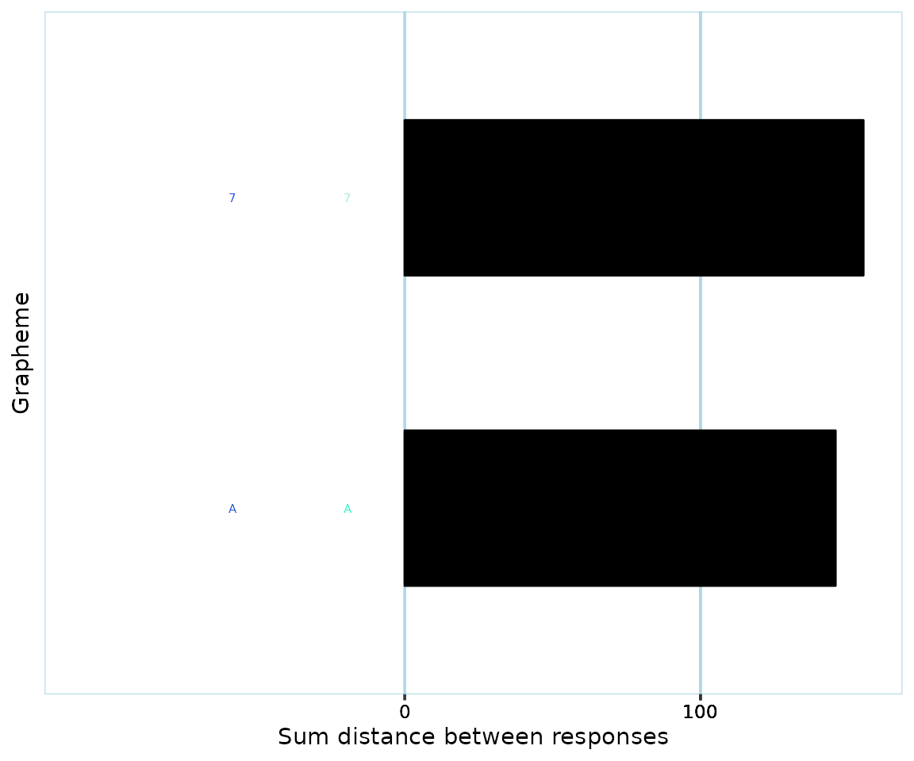

This is the ‘quick start’ guide to synr. For an in-depth tutorial, please see the main tutorial.
Rolling up the data
If you have long format data (otherwise see Creating ParticipantGroup objects):
pg <- create_participantgroup(
raw_df=synr_exampledf_long_small,
n_trials_per_grapheme=2,
id_col_name="participant_id",
symbol_col_name="trial_symbol",
color_col_name="response_color",
time_col_name="response_time", # optional, not necessary for core functionality
color_space_spec="Luv"
)The resulting object (pg) is a nested structure
implemented with reference
classes. With this, you can call various methods and access various
attributes. Examples of common use cases are included below.
Calculate participant consistency scores
Consistency scores for all participants, looking only at trials involving letters.
cons_scores_letters <- pg$get_mean_consistency_scores(symbol_filter=LETTERS)
print(cons_scores_letters)
#> [1] 119.2646 129.1678 145.5045Produce a plot of a single participant’s responses
Plot of single participant’s per-grapheme consistency scores, looking only at trials involving the graphemes ‘A’ and ‘7’.
pg$participants[['1']]$get_plot(symbol_filter=c('A', '7'))
Export relevant participant data to a data frame
# get mean consistency scores for all participants, filtering first by letters, then digits
mean_cscores_letters <- pg$get_mean_consistency_scores(symbol_filter=LETTERS)
mean_cscores_digits <- pg$get_mean_consistency_scores(symbol_filter=0:9)
# get number of graphemes where all response colors were non-missing,
# filtering first by letters, then digits
# (in the example data frame, all participants have all-valid responses)
num_valid_letters <- pg$get_numbers_all_colored_graphemes(symbol_filter=LETTERS)
num_valid_digits <- pg$get_numbers_all_colored_graphemes(symbol_filter=0:9)
p_ids <- pg$get_ids()
mean_scores_df <- data.frame(
participant_id=p_ids,
cscore_letters=mean_cscores_letters,
cscore_digits=mean_cscores_digits,
num_valid_letters=num_valid_letters,
num_valid_digits=num_valid_digits
)
print(mean_scores_df)
#> participant_id cscore_letters cscore_digits num_valid_letters
#> 1 1 119.2646 155.089 2
#> 2 2 129.1678 45.786 2
#> 3 3 145.5045 164.870 2
#> num_valid_digits
#> 1 1
#> 2 1
#> 3 1Finding more information
Apart from the aforementioned vignettes, you can find help
documentation for fields/attributes and methods of involved objects by
running help(ParticipantGroup),
help(Participant) or help(Grapheme).